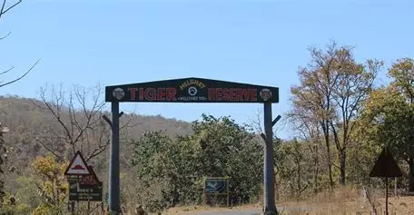

Nestled deep in the rugged terrains of Maharashtra’s Amravati district, the Melghat Tiger Reserve is a true paradise for wildlife lovers and adventure seekers. Established in 1974 under India’s groundbreaking Project Tiger initiative, Melghat proudly stands as one of the country’s first nine tiger reserves. Spanning an awe-inspiring 2,768 square kilometers, this sanctuary is a haven for a dazzling array of flora and fauna, making it an unmissable destination for nature enthusiasts.Perched on the southern offshoot of the Satpura Hill Range, also known as the Gavilgarh Hills, the very name Melghat translates to “meeting of the ghats.” And true to its name, this region is a mesmerizing blend of rolling hills, deep ravines, and dense forests. The Tapti River flows gracefully along the reserve’s northeastern boundary, while five tributaries—Khandu, Khapra, Sipna, Gadga, and Dolar—crisscross the sanctuary, creating a thriving ecosystem.
Timings: 6:00 AM to 7:00 PM
